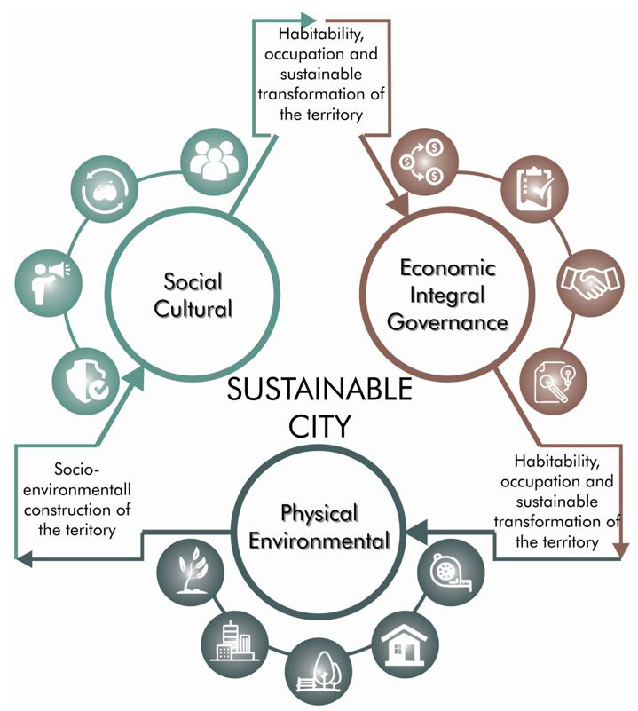
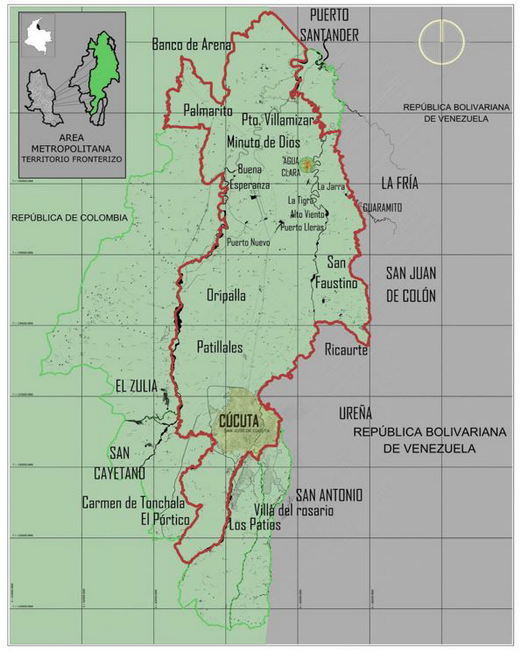
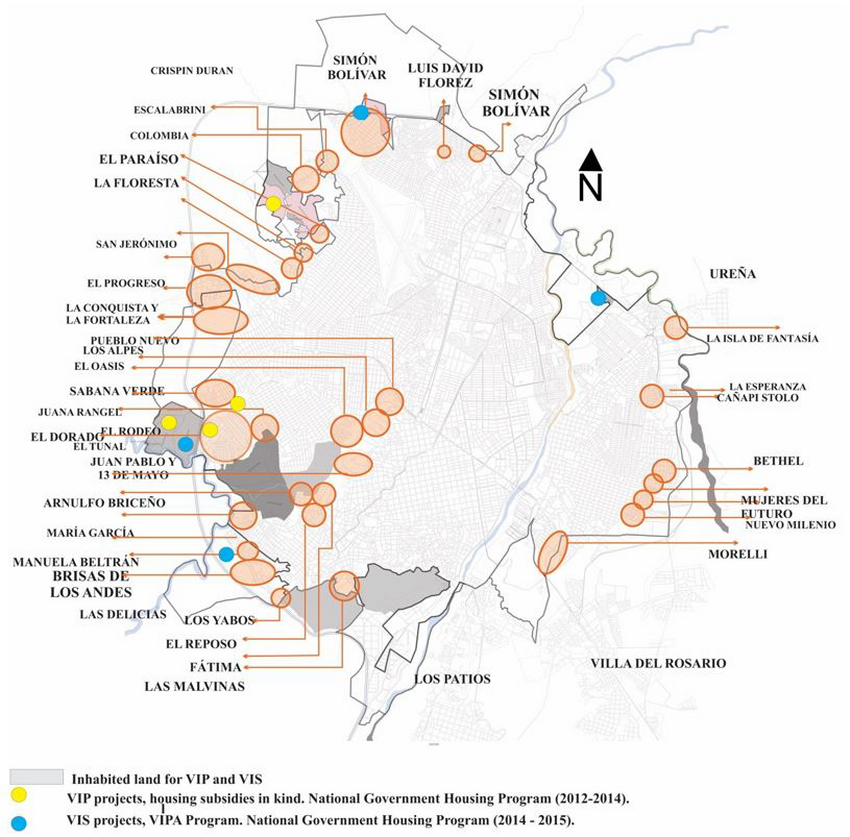
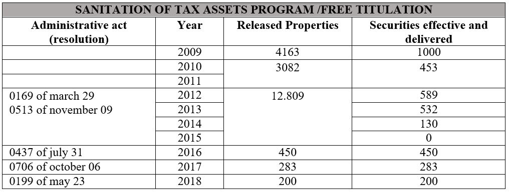
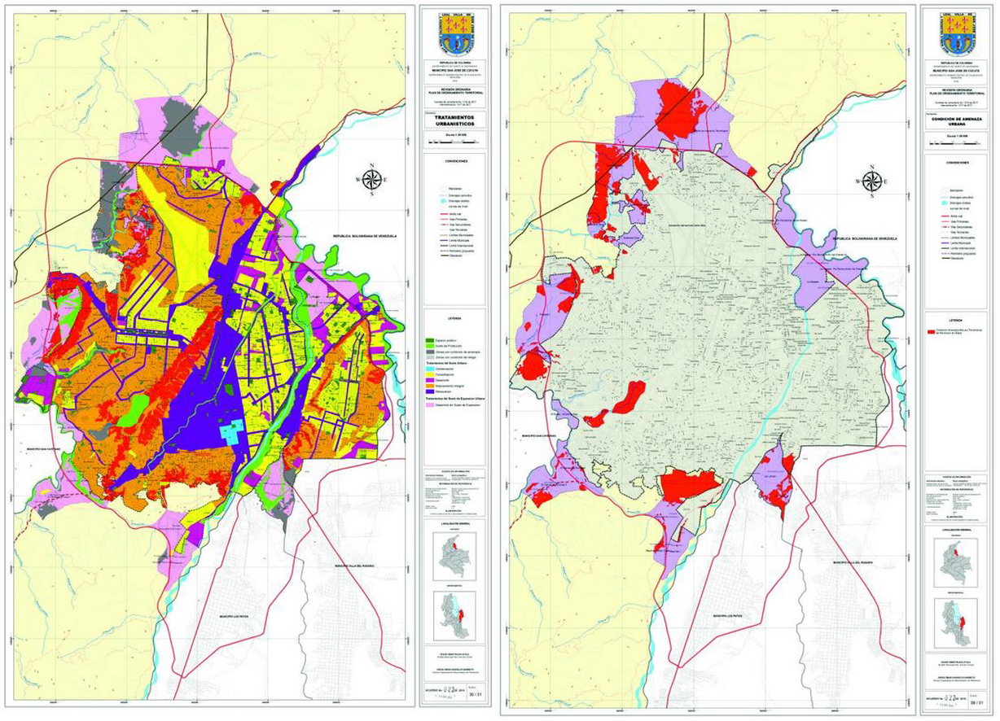

Introduction
The Latin American territory in the last decades has presented significant changes in terms of territorial
planning, in response to the transformations of the dynamics associated with the urban phenomena and events
typical of each territory. These are related to the physical- spatial aspects, and determined by their
geographical, economic, environmental, governmental and social factors (Martínez Toro, 2014). In addition,
they have been characterized by presenting patterns of land occupation and growth in a dispersed and
uncontrolled way, which have resulted in the consolidation of dense urban areas, transformations and
imbalances in the territory and the increase in needs with respect to use and land use. land cover, directly
impacting the environmental dimension of cities (Carreño Campo; Alfonso, 2018).
Aponte Páez (2007) assures that cities must maintain a state of urban balance, through which their dimensions
guarantee the sustainability and interaction of the territory at different scales, promoting the well-being
and quality of life of the population in compliance with the functions of the city. For this author, the
sustainable development of the territory is one of the great problems of Latin American cities, which is
reflected in the increase in indicators derived from the phenomena of poverty, inequality and environmental
deterioration.
For Morawietz (2014), the 1987 World Commission for the Environment Conference set a precedent through the
Brundtland report, which determined that the sustainable
development of the territory is associated with meeting the needs of the present population and future.
Therefore, as can be seen in Figure 01, it must be developed from the integration of attributes such as the
availability of resources, adaptability to change, resilience and stability; that configure a systemic
vision of the territory, and allow to recognize and address the phenomena and problems associated with the
physical- environmental, social-cultural and
normative economic dimensions (Gallopin, 1994, 2003).

Figure 1. Study Dimensions of the Sustainable City.
Source: Self-made.
In Colombia, the urban growth process has been characterized by a densification centered on population
concentration within the main urban areas (Center for Research on Social Dynamics, 2007). This makes sense
under the scenarios of systematic violence in the country -product of the internal armed conflict- between
the 60s and 70s, where the cities absorbed constant processes of human mobility that unbalanced the
population relationship between rural and urban areas (Egea Jiménez, Soledad Suescún, 2008; Ruiz, 2011).
This resulted in cities showing growth under unplanned land use patterns, with extreme poverty scenarios;
such as the one established by the National Planning Department (2015) and López Muñoz (2019) who mention
that in 2014, 5.1% of the urban population had extreme poverty rates, and by the World Bank, for who in 2018
in Colombia 77% of the population was concentrated in the large cities of the country.
This scenario resulted in a weakness in the control and planning of territorial governance, with respect to
changes in land use, the volume and supply of infrastructure and services (UN Habitat, CAF, FINDETER, APC,
SDDE , 2015) in addition
to health, the environment, education; and the seven principles indicated by ECLAC (2002) for sustainable
cities: multipolarity, interface systems, negative entropy phase, urbanity and open spaces, flows, social
participation and the production of the city (pp. 57-59).
Thus, Colombian cities must generate an “effective production of adequate and updated indicators” that allow
evaluating the state and requirements of the territories (Quiroga Martínez, 2014, pp. 22), since in this
way, from the ordinance territorial strategies can be proposed (integration-
intensive-diversification-defensive) (David, 2003) that respond to the main problems, promote the
potentialization of the territory, strengthen productivity, sustainability and effectiveness with respect to
decision-making monitoring and intervention of the territory.
Material and method
This research was developed through a mixed approach methodology, understood by Hernández Sampieri; Fernández
Collado, Baptista Lucio (2014) as an intersubjective reality that allows the approach, analysis and
understanding of complex phenomena from a multi- approach, under a broad perspective of the subject of study
addressed. This approach favors the characterization of the topics, allowing a deeper understanding of the
different levels of the scientific method reflected in the results and the conclusions raised, as well as in
the process of each of its stages (pp. 534-537).
An inductive method was approached that studies the common facts found in reality for a defined territory
(Rodríguez Jiménez and Pérez Jacinto, 2017, 187), and an analytical method that delved into the phenomena,
causes and impact
(Lopera Echavarría et al. 2010), of the growth and transformation of the San José de Cúcuta city under the
analysis of the study study dimensions: physical- environmental, social-cultural and economic- normative for
a period of twenty years.
The source of data collection corresponded to the documentary, in order to interpret and give meaning to
primary information sources such as: regulations, decrees and laws, and secondary sources from books and
scientific research articles (Gómez, 2011). This process allowed the construction of a theoretical framework
that addressed concepts such as urban segregation, territorial imbalance, sustainable city and urban
problems or risks; among others, in addition to keywords such as: Territorial Analysis, City, Urban Growth,
Territory.
Results and discussion
Problems of the Territory of San José de Cúcuta: The San José de Cucuta city was founded under a model agreed
by Juana Rangel de Cuellar in 1733, on the eastern side of the department of Norte de Santander, Colombia.
Its geographical limits correspond to the municipalities of Tibú, San Cayetano, Bochalema, Zulia, Los
Patios, Puerto Santander and the Bolivarian Republic of Venezuela, under a territorial extension of 1,176
km2 (Metropolitan Area of Cúcuta, SF) (see Figure 2) .

Figure 2. Geographic location of the territory of San José de Cúcuta.
Source: Own elaboration based on Argis.
In 1991, the Metropolitan Area of Cúcuta was created by ordinance number 40 of January 3, made up of the
municipalities of Villa de Rosario, Los Patios, San Cayetano, Puerto Santander, Zulia and San José de
Cúcuta, the latter being the articulating municipality of the metropolitan territory; Five months after its
creation, it was put into operation by Decree 508 of July 3, 1991 (Muñoz Ruiz, 2017). Its extension
corresponds to 1,250 km2 and its population to 1,024,234 inhabitants, according to the population data
projected by DANE for the year 2020 (North Santander Government, 2020, pp. 11). The geographical position of
San José de Cúcuta and its Metropolitan Area, configures a development opportunity, which allows a
connection with the interior of Colombia and with the Bolivarian Republic of Venezuela, through
the border areas of Villa del Rosario, San Cayetano, Puerto Santander and Zulia (Cely Quintana & Coronel
Ruiz, 2019, pp. 30).
San José de Cúcuta as a metropolitan articulator and now the capital city (Congress of the Republic, 2021),
has historically presented a territorial transformation derived from the uncontrolled growth of the
population with effects on the use and land tenure, which has had an impact on the dimensions normative
physical-environmental, social-cultural and economic. This can be evidenced in the Metropolitan Integral
Plan 2017-228 of the Metropolitan Area of Cúcuta (2017), where twenty- two problems associated with:
infrastructure, housing, public services, metropolitan transparency, heritage, citizen participation,
tourism promotion, environmental public policy, technological innovation, land use planning, equity and
social inclusion, public space, security and metropolitan strategic planning; among others (pp. 40).
These impacts unleashed urban problems or risks, understood by Lavigne (1988) as an interruption of the
systemic process of the city that affects the sustainable development of the territory, unbalances the
quality of life of the inhabitants and the fulfillment of the functions of the city (UN Habitat, CAF,
FINDETER, APC, SDDE, 2015). For the purposes of this research, three fronts were established that
consolidate the main elements of interest related to urban problems or risks in the territory of San José de
Cúcuta in the last two decades. The first of them corresponds to the environment and sustainability
(physical- environmental dimension), taking into account that this type of problem is transversal to the
physical-environmental, social-cultural and normative economic dimensions, and has had a significant impact
on phenomena associated with the scarcity of developable land, land informality, urban-territorial
management and planning; and, the socio-natural phenomena; in accordance with what is established in the
principles of the sustainable city (Lima COP20- CMP10, 2014; Salas- Zapata et al. 2016).
The second front is related to the social-cultural dimension, represented through the relationship of the
human being with the environment, from the experience of the inhabitant from the physical-built and the
experiences that are part of their reality and daily life. They are part of this risk: migration, the
perception of security, extreme poverty, social inequality and the dissatisfaction of basic needs
(physiological, security, affiliation, recognition and self-realization) (Maslow, 1991; Sierra de Rodríguez,
Ayala García and Coronel Ruiz, 2020). Finally, the third front relates to the problems associated with
governance, from the economic- normative dimension. The foregoing in relation to the importance of
government management with respect to the development and planning of the territory, which occupies a
fundamental role in territorial management, economic development, productivity and competitiveness
(Schwedler, 2011; Hernández Bonivento, 2014 ).
The aforementioned fronts have triggered an increase in inequalities, vulnerabilities and deficiencies in the
territory for the city at its different scales. Thus, the position of Aché (2012) becomes relevant, for whom
the effects on the physical- environmental, social- cultural and economic- normative dimensions generate
disparities and divergences, in response to the form of use and organization of the geographical space, in
relation to the "meaning, purpose and scope of territorial relations" taking into account that "the analysis
of socio-economic and socio-environmental territorial inequalities, their causes and factors of formation,
intensification or attenuation, requires a research (...) in the explanation of the mechanisms that govern
the widening or not of territorial inequalities”, challenges that must be assumed by the government entities
in charge of planning and managing the city.
Causes and impact of the growth of the Border territory: In Colombia the sixties and seventies marked an
important pattern in the change of territorial configuration and the growth of cities, as a consequence of
the internal armed conflict, which determined an acceleration of the urbanization process in the national
territory, through which 75% of the population was concentrated in intermediate cities; increasing the needs
derived from the physical-environmental dimension; mainly (Center for Research on Social Dynamics, 2007;
Egea Jiménez and Soledad Suescún, 2008).
This scenario meant for San José de Cúcuta an increase in the urban-spatial segregation process and the
growth of the territory that determined a change in the urban fabric (Cervio, 2015; Cervio and Vergara,
2017), multiplying the problems associated with the consumption of land, from the demand for services and
infrastructure, to social relations, to the extension of metropolitan land and migration, under the
consolidation of an informal territorial profile present to date; especially towards the peripheral area of
the city, which has been the place where the vulnerable population related to strata 1 and 2 has generally
settled, and which according to DANE (2020) presented an index of 10 % of extreme poverty, even making use
of the expansion land available for development, in accordance with the provisions of the San José de Cúcuta
Municipal Council Corporation (2019) in the Territorial Planning Guide.

Figure 3. Location of Informal Settlements of San José de Cúcuta 2020.
Source: Self-made.
In response to the occupation of the expansion land and the socio-cultural and physical- environmental
phenomena present in the territory, San José de Cúcuta implemented in 2011 the free title transfer program,
foreseen in the national housing policy through of Law 1537 of 2012, which aims to legalize property owned
by the State, known as “fiscal assets” (Congress of the Republic of Colombia, 2005; Ministry of Housing,
City and Territory, 2011; Congress of the Republic of Colombia, 2020).
However, in the case of the city of San José de Cúcuta, which has a border profile, the impact of land
occupation informally has been continuous, especially considering that within the guidelines that are part
of the national regulations, They find aspects of the application process of the program, which are not
coherent and do not respond to the dynamics and characteristics of the city. Since the reality present in
the territory approached from the sociocultural, economic, urban, cadastral, geological, environmental and
legal conditions of land, present particularities that should not be studied or determined only from the
generality of the norm. From this point of view, national regulations have not efficiently favored the
application of the free title transfer program and, therefore, compliance with the purposes established in
the national housing policy - Law 1537 of 2012 (Metrovivienda Cúcuta, 2015 (See Table I).
Table I. Total Titled Properties in San José De Cúcuta, Period 2009-2018.

Source: Made from Coronel Ruiz (2019)
A large part of the human settlements located in the peripheral area of the city are classified according to
the Territorial Guide of Agreement 022 of 2019, under the condition of high threat due to risk of mass
removal, and framed according to the article 49, under the classification of protection land, a denomination
through which it is specified that the geographical, landscape, and environmental characteristics can
determine areas of threats and non-mitigable risk for the location of human settlements (See figure 4).

Figure 4. Planimetry of urban treatments (30/31) and urban threat condition (9/31)
Source:Municipal Council of San José de Cúcuta (2019).
San José de Cúcuta has geological faults associated with the eastern Colombian mountain range and the
Venezuelan Uribante Caparo, as well as one of the highest seismic levels in the country, which has
represented physical-built damage to the territory in different periods of time, on all related to the year
1875, in which the city suffered the earthquake in the Andes, with an almost total impact on the territory
(Ministry of Mines and Energy, 1999; Ingeominas, 1997).
The city presents climatic phenomena associated with the bimodal rain regime, with atmospheric variations
that determine intense periods of rain
(phenomenon of the girl) or drought (phenomenon of the child) (Flórez G, et al. 2008;), which have brought
impacts negative for the territory, especially the phenomenon of the girl child that has had its maximum
impact in 2010, 2011 and 2020 causing landslides and floods in areas classified as risk of mass removal,
which according to data provided by Metrovivienda Cúcuta ( 2015) has represented the affectation of 2,672
homes approximately. This has configured the increase in the housing deficit in the city of, thus generating
the scenario (2012- 2013) that allowed the local government to postulate the population profile "Total
Households Affected by natural disasters, public calamities and / or
emergencies that live in non- mitigable high-risk areas ”within the 100 thousand free homes program (Coronel
Ruiz, 2016; Ayala García, 2020).
The situation of internal problems of the Bolivarian Republic of Venezuela since the closure of the border on
August 15, 2015 to date, which generated the massification of migrations (human mobilities) to Colombian
territory, defined by the International Bank for Reconstruction and Fomento
/ Banco Mundial (2018) as a response to the context of transition in economic, political and security
matters from the Venezuelan territory, a process that has been developed through human mobilities associated
with the types of migration: transit, return, destination and pendular, carried out from a regular or
irregular approach.
The constant arrival of migrants has generated a change in the profile and the urban landscape; as well as an
accelerated growth of the population, which, according to the figures of Migración Colombia as of December
31, 2020, reports for the national territory the presence of more than 1,729,000 Venezuelans, of which
966,000 are in an irregular situation. In addition, within this scenario, it is important to establish that
the referenced data with a cut-off date of April 30, 2020, determine that the Norte de Santander department
houses 11.38% (203,604) Venezuelan migrants on departmental soil, of which 106,436 Migrants are in the city
of San José de Cúcuta, 39,373 in the municipality of Villa del Rosario, 7,523 in the municipality of Los
Patios, 3,568 in the municipality of Zulia, 2,265 in the municipality of Puerto Santander and 457 in the
municipality of San Cayetano; figure that for the Metropolitan Area of Cúcuta corresponds to the presence of
159,622 Venezuelan migrants; that is, 78.39% of the migrant population of Norte de Santander, while the city
of San José de Cúcuta represents 52.27% of it (Migración Colombia, 2020).
This phenomenon impacts the socio-cultural dimension of the territory, because generally the host cities must
address the socioeconomic conditions of
the migrant population (most of them in extreme poverty), which in turn generate impacts associated with the
economic, institutional, social, health services, education services, employment services, social protection
services, shelter and temporary housing, provision and services of water and basic sanitation, targeted
impacts (transport and energy), impacts on the physical and growth, establishing new contexts of
vulnerability for the receiving territory (International Bank for Reconstruction and Development / World
Bank, 2018), and evidencing that the city of San José as a border area and its metropolitan area do not have
the capacity to develop strategies that allow mitigating and address the impact generated by migration.
The causes, phenomena and problems mentioned above from the study dimensions of this research, show for San
José de Cúcuta a territorial imbalance that affects the quality of life of the inhabitants and generates
negative impacts on aspects related to the functions of the city. This becomes relevant, when taking into
account the United Nations Millennium Goals (MDGs) in 2000 and the Sustainable Development Goals (SDGs) in
2015 considered that socio-environmental factors such as the deficient provision of services and the Basic
sanitation represent a negative scenario for the sustainability of the territory, generating in turn
territorial, social and environmental inequalities that do not favor competitiveness and development (Aché
Aché, 2012) and took up issues related to the sustainability of the territory, in order to balance
environmental, social and economic aspects and provide a better quality of life for the population (United
Nations Territory Program, SF). However, to effectively comply with them, it is the function of government
entities to provide integrated governance that ensures the management and development of political, economic
and social actions whose purpose is to promote the efficient growth of the territories at different scales,
which In the case of the city of Cúcuta, it must include its metropolitan area.
Conclusions
This research contributed to the generation of pedagogical tools aimed at analyzing the causes, phenomena and
the impact of urban growth in relation to the transformation of the territory of San José de Cúcuta,
determining the main problems that, from the physical- environmental dimensions, Social-cultural and
economic-normative have negatively impacted the productivity, sustainability and strengthening of the city
and its metropolitan area in the last twenty years.
Regarding urban management, it was determined that San José de Cúcuta and its metropolitan area have physical
and functional characteristics that can contribute to the potentialization of the territory. This is
evidenced in that its location and physical- geographical aspects can be taken as a scenario of growth and
access to opportunities to improve communication and the exchange of goods and services, with the interior
of the country and with the Bolivarian Republic of Venezuela.
The city has the challenge of formulating and developing mechanisms based on instruments for urban planning
and management under a unified physical-territorial organization model (Metropolitan Area) in accordance
with national regulations, which allow the generation of social-economic development strategies through
short, medium and long term in order to recover the integral balance of the territory, stability related to
the environment, social equity, physical security, satisfaction of the basic needs of the population,
productivity and habitability of the territory; improving urban functionality and territorial cooperation in
search of better opportunities. This will favor the integration and planning of the territory, as well as
consequently the solution to the problems derived from the environment and sustainability, the scarcity of
developable land, informal occupation of land, urban- spatial segregation, migration, social inequality and
territorial, and socio-natural phenomena; among others.
In the same way, this organizational model must ensure a policy regarding the regulation of land, which
reduces the informality indexes derived from the occupation, use and tenure of the same. This will help to
improve the housing deficit; thus reducing social gaps and improving environmental risk management (levels
of seismic hazard and vulnerability). This can only be possible if government entities guarantee the
consolidation of an integral urban governance that allows, through the articulation and participation of
territorial actors, the correct decision-making regarding the territory.
Finally, San José de Cúcuta must address a social policy with an urban development approach (linked to the
unified physical-territorial organization model), which allows the establishment of tools for humanitarian
assistance in response to the temporary needs of migrants and their impact on the territory as a host city.
Likewise, in order to improve the sustainability of the territory, it is necessary to adopt strategies that
favor employability and the strengthening of the technical and technological skills of the population. The
foregoing when taking into account that qualification and access to education allows to enhance human
resources and guarantee the diversification of the economy.
References
Aché Aché, D. B. (2012) Geografía de las desigualdades territoriales socio-económicas y socio-ambientales.
Terra 28 (43). http://ve.scielo.or g/scielo.php?script=sci_ arttext&pid=S1012-70892012000100005
Aponte Páez, F. A (2007). La sustentabilidad urbana
en las ciudades. Boletim Goiano de Geografia,.
27 (2) 11-33 Universidade Federal de Goiás, Brasil.
Área Metropolitana de Cúcuta (S.F) Historia de San
José de Cúcuta https://amc.gov.co/amc/index.php/san-jose-de-cucuta/
Área Metropolitana de Cúcuta (2017). Acuerdo Metropolitano 02 de 2017 “por medio del cual se aprueba y adopta
el Plan Integral Desarrollo Metropolitano 2017-2028”. https://amc.gov.co/amc/index.php/plan-de-desarrollo/
Ayala García, E. T (2020). Las funciones y los riesgos urbanos de la ciudad de Cúcuta: Una perspectiva
crítica en Ciudad, Sostenibilidad y posconflicto en Colombia: Santa Marta, Cúcuta, Cali y Barranquilla.
FESCOL, FNA.
Banco Internacional de Reconstrucción y Fomento/ Banco Mundial (2018). Migración desde Venezuela a Colombia.
Impactos y estrategias de respuesta en el corto y mediano plazo.
https://r4v.info/es/documents/download/66643
Carreño Campo, C y Alfonso, W (2018). Relación entre los procesos de urbanización, el comercio internacional
y su incidencia en la sostenibilidad urbana. Cuadernos de Vivienda y Urbanismo, 11 (22). Pontificia
Universidad Javeriana DOI https://doi.org/0.11144/Javeriana.cvu11-22.rpuc
Cely Quintana, C. & Coronel Ruiz, L. K. (2019). “Procesos de urbanización informal, caso Alonsito, comuna 6
ciudad de Cúcuta”. Universidad Francisco de Paula Santander. Cúcuta.
Centro de Investigación sobre Dinámica Social (2007). Ciudad, Espacio y población. El proceso de urbanización
en Colombia. UNFPA: Universidad Externado de Colombia.
CEPAL (2002). Las nuevas funciones urbanas: gestión para la ciudad sostenible. Chile: División de Medio
Ambiente y Asentamientos Humanos. https://repositorio.cepal.org/bitstream/handle/11362/5747/S02124.pdf?sequence=1
Cervio, A. L. (2015) Expansión urbana y
segregación socio-espacial en la ciudad de Córdoba (Argentina) durante los años 80. Revista Astrolabio Nueva
época Número 14.
Cervio, A. L y Vergara G. (2017). Segregación socio- espacial, conflictos y sensibilidades: disputas por la
movilidad y el desplazamiento en la ciudad de Córdoba, Argentina. Aposta Revista de Ciencias Sociales,74.
https://www.redalyc.org/jatsRepo/4959/495954961006/html/index.html
Congreso de la República de Colombia (2005). Ley 1001 de diciembre 30 de 2005 “Por medio de la cual se
adoptan medidas respecto a la cartera del Instituto Nacional de Vivienda de Interés Social y Reforma Urbana,
Inurbe, en Liquidación, y se dictan otras disposiciones”.
http://www.suin-juriscol.gov.co/viewDocument.asp?ruta=Leyes/1672550
Congreso de la República de Colombia (2020). Ley 2044 30 de julio 2020 “Por el cual se dictan normas para el
saneamiento de predios ocupados por asentamientos humanos ilegales y se dictan otras disposiciones"
https://www.senado.gov.co/index.php/documentos/senado-prensa/4320-ley-2044-del-30-de-julio-de-2020-asentamientos-humanos-ilegales/file
Congreso de la República de Colombia (2021) Ley Orgánica 2082 “por medio de la cual se crea la categoría
municipal de ciudades capitales, se adoptan mecanismos tendientes a fortalecer la descentralización
administrativa y se dictan otras disposiciones”
https://dapre.presidencia.gov.co/normativa/normativa/LEY%202082%20DEL%2018%20DE%20FEBRERO%20DE%202021.pdf
Corporación Concejo Municipal San José de Cúcuta (2019). Acuerdo 22 de 2019. “Por medio del cual se adopta
una revisión ordinaria del Plan de Ordenamiento Territorial del municipio de San José de Cúcuta”.
https://cucutanortedesantander.micolombiadigital.gov.co/sites/cucutanortedesantander/content/files/000706/35280_acuerdo-022-del-19-de-diciembre-de-2019--pot1100.pdf
Coronel Ruiz, L.K. (2016) Efectos sociales del programa de Titulación gratuita en el Municipio de Cúcuta
periodo 2008-2011. Universidad Piloto de Colombia.
Coronel Ruiz, L. K. (2019). Diseño de un modelo de gestión para mejorar el proceso aplicado de titulación
gratuita de predios fiscales en el municipio de San José de Cúcuta, Colombia. (Tesis Doctoral en
desarrollo). Universidad Internacional Iberoamericana. México.
DANE (2020). La información del DANE para la toma de decisiones de las ciudades capitales. Cúcuta
https://www.dane.gov.co/files/investigaciones/planes-desarrollo-territorial/120220-Info-Alcaldia-Cucuta.pdf
David, F. R. (2003). Conceptos de administración
estratégica. México: Pearson Education.
Departamento Nacional de Planeación (DNP). (2015). Diagnóstico de la pobreza rural. Colombia 2010-2014.
Egea Jiménez, C. y Soledad Suescún, J. I. (2008). Migraciones y conflictos. El desplazamiento
internoenColombia.RevistaConvergencia15(47)
http://www.scielo.org.mx/scielo.php?script=sci_arttext&pid=S1405-14352008000200008
Flórez G, C. H; Zárate C, R; Caicedo O, Z. K y Contreras, B. A. (2008). Estabilización química de suelos
expansivos de San José de Cúcuta (Colombia) usando cenizas volantes. Revista Respuestas, 13 (2). DOI:
https://doi.org/10.22463/0122820X.536 - https://revistas.ufps.edu.co/index.php/respuestas/article/view/536
Gallopin, G. (1994). Impoverishment and sustainable
development. A systems approach. Internacional Institute for Sustainable development. Canada: IISD.
Gallopin, G. (2003). A systems approach to sustainability and sustainable development. Sustainable
Development and Human Settlements Division. CEPAL Santiago de Chile: Naciones Unidas
https://repositorio.cepal.org/bitstream/handle/11362/5759/S033119_en.pdf
Gobernación de Norte de Santander (2020). Plan de Desarrollo 2020-2023 “Más Oportunidades para todos”.
http://www.nortedesantander.gov.co/Portals/0/PDD%20NdS%202020- 2023%20 (Ordenanza%20006%20de%202020).pdf
Gómez, L (2011). Un espacio para la investigación documental. Revista Vanguardia psicológica 2(1) 226-233.
Hernández Bonivento, J. A. ( 2014). Del gobierno a la gobernanza local. Capacidades, Instituciones y Visiones
de lo Público en El Proceso de Descentralización en Colombia: Estudio de Casos. Tesis Doctoral. Universidad
Complutense de Madrid.
Hernández Sampieri, R.; Fernández Collado, C. y Baptista Lucio, M. P (2014). Metodología de la investigación.
Sexta edición. McGrawHill
Ingeominas (1997) Mapa de amenaza sísmica para Colombia.
Lavigne, J. C. (1988). “Au fil du risque, la ville”. En
Annales de la Recherche Urbaine. 40.
Lima COP20- CMP10 (2014). Ciudades sostenibles. Un climate change conferences 2014 http://
www.cop20.pe/ck/8-principios-de-una-ciudad- sostenible/
López Muñoz, L. V. (2019). Pobreza y subdesarrollo rural en Colombia. Análisis desde la Teoría del
SesgoUrbano.EstudiosPolíticos,5459-81.https:// www.redalyc.org/jatsRepo/164/16459057004/ html/index.html#B14
Lopera Echavarría, J. D; Ramirez Gómez, C. A; Zuluaga Aristizábal , M. U y Ortiz Vanegas, J (2010). El método
analítico como método natural. Nómadas. Critical Journal of Social and Juridical Sciences, 25 (1).
Euro-Mediterranean University Institute Roma, Italia https://www.redalyc.org/pdf/181/18112179017.pdf
Martínez Toro, P. M. (2014). La producción del espacio en la ciudad latinoamericana. El modelo del impacto
del capitalismo global en la metropolización. HALLAZGOS 12 (23) 211-
229. Universidad Santo Tomás.
Maslow, A. H. (1991). Motivación y personalidad.
Madrid: Ediciones Díaz Santos
Metrovivienda Cúcuta. (19 de Septiembre de 2015). Informe programa de saneamiento predial. Cúcuta:
Metrovivienda Cúcuta.
Migración Colombia (2020). Radiografía Venezolanos en Colombia, 30 de abril 2020
https://www.migracioncolombia.gov.co/infografias/venezolanos-en-colombia-corte-a-30-de-abril-de-2020
Ministerio de Minas y Energía (1999) Mapa de
zonificación sísmica y valoresAa. INGEOMINAS
Ministerio de Vivienda, Ciudad y Territorio (2011). Decreto 4825 de diciembre 20 de 2011 “por el
cual se reglamentan los artículos 2°, 4°, 6° y 7° de la Ley 1001 de 2005 y parcialmente el artículo 90 de la
Ley 1151 de 2007, en materia de transferencia gratuita de bienes fiscales urbanos para el desarrollo de
programas de vivienda de interés social y se dictan otras disposiciones”
http://www.suin-juriscol.gov.co/viewDocument.asp?id=1552187
Muñoz Ruiz, A. F. (2017). El Área Metropolitana de Cúcuta como mecanismo de implementación del Desarrollo
Sostenible de acuerdo al Plan Integral de Desarrollo Metropolitano “Área Viva, Región Sostenible” en el
departamento de Norte de Santander (2012-2015). Facultad de Ciencia Política y Gobierno Universidad Colegio
Mayor de Nuestra Señora del Rosario.
Morawietz, L. (2014). Educación para el desarrollo sostenible y el cambio climático. Apuntes: Educación y
desarrollo post-2015 #2. Organización de las Naciones Unidas para la Educación, la ciencia y la Cultura.
ONU Hábitat, CAF, FINDETER, APC y SDDE
(2015). Primer reporte del Estado de las ciudades de Colombia, camino hacia la prosperidad urbana.
https://oscpr.dnp.gov.co/administrator/components/com_publicaciones/uploads/1er_Reporte_del_Estado_de_las_Ciudades_de_Colombia_Camino_hacia_la_prosperidad_Urbana._.pdf
Programa de las Naciones Unidas para el territorio (S.F) Objetivos del desarrollo sostenible.
https://www.undp.org/content/undp/es/home/sustainable-development-goals.html
Quiroga Martínez, R. (2009). Guía metodológica para desarrollar indicadores ambientales y de desarrollo
sostenible en países de América Latina y el Caribe. Chile: CEPAL
Rodríguez Jiménez A. Y Pérez Jacinto A. O (2017). Métodos científicos de indagación y construcción del c o n
o c i m i e n t o . Revista EAN, 82, pp.179-200. https://doi.org/10.21158/01208160.n82.2017.1647 -
http://www.scielo.org.co/pdf/ean/n82/0120-8160-ean-82-00179.pdf
Ruiz, N.Y. (2011). El desplazamiento forzado en Colombia: una revisión histórica y demográfica. Estudios
demográficos y urbanos 26 (1)
http://www.scielo.org.mx/scielo.php?script=sci_arttext&pid=S0186-72102011000100141
Salas Zapata, L; López Ríos, J. M.; Gómez Molina, S; Franco Moreno, D. y Martínez Herrera, E.(2016). Ciudades
sostenibles y saludables: estrategias en busca de la calidad de vida. Revista Fac. Nac. Salud Pública 34 (1)
http://www.scielo.org.co/pdf/rfnsp/v34n1/v34n1a13.pdf
Sierra de Rodríguez O. M, Ayala García E. T. y Coronel Ruiz L. K. (2020). Perspectiva de género en los
fenómenos migratorios: Estudio socioeconómico y laboral de la frontera Colombo Venezolana. Revista Espacios
41 (47) art. 15 https://www.revistaespacios.com/a20v41n47/a20v41n47p15.pdf
Schwedler, H.U. (2011). Gobernanza urbana integrada. Desarrollo Urbano del Senado de Berlín, División de
Asuntos Internacionales y de la UE.
https://www.metropolis.org/sites/default/files/c3-metropolis-gobernanza-integrada-esp.pdf

 Arquitecta, Magister
en Gestión Urbana,
luzkarimecr@ufps.edu.co .
Arquitecta, Magister
en Gestión Urbana,
luzkarimecr@ufps.edu.co .
 ORCID:
0000-0003-0331-0568.
Universidad Francisco de Paula Santander, Cúcuta, Colombia
ORCID:
0000-0003-0331-0568.
Universidad Francisco de Paula Santander, Cúcuta, Colombia